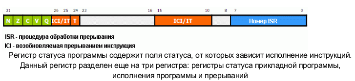
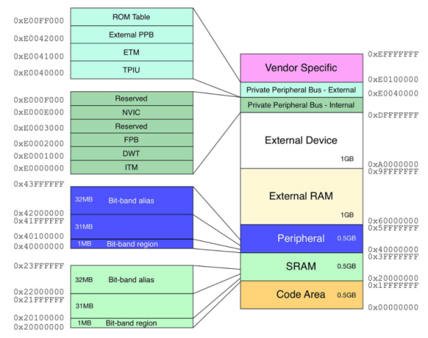

Регистры
ЦПУ Cortex является RISC-процессором, который выполнен по архитектуре чтения/записи. Для выполнения операций обработки данных вначале необходимо поместить операнды из памяти в центральный регистровый файл, затем выполнить требуемуюоперацию над данными в регистрах и, наконец, перезаписать результат обратно в память.
Данный регистровый файл образуют шестнадцать 32-битных регистров.
Регистры R0-R12 - обычные регистры, которые могут использоваться для хранения программных переменных.
У регистров R13-R15 имеются особые функции в рамках ЦПУ Cortex.
Регистр R13 выступает в роли указателя стека. Данный регистр является банковым, что делает возможной работу ЦПУ Cortex в двух режимах работы, в каждом из которых используется свое собственное пространство стека. Данная возможность обычно используется операционными системами реального времени (ОСРВ), которые могут выполнять свой "системный" код в защищенном режиме. У двух стеков ЦПУ Cortex имеются собственные наименования: основной стек и стек процесса.
Регистр R14 называется регистром связи. Он используется для хранения адреса возврата из подпрограммы. Благодаря нему, ЦПУ Cortex быстро переходит к подпрограмме и выходит из нее. Если же в программе используется несколько уровней вложений подпрограмм, то компилятор будет автоматически сохранять R14 в стек.
Последний регистр R15 - счетчик программы; поскольку он является частью центрального регистрового файла, его чтение и обработка может выполняться аналогично любым другим регистрам.
XPSR
Помимо регистрового файла, имеется отдельный регистр, который называется регистром статуса программы. Он не входит в основной регистровый файл, а доступ к нему возможен с помощью двух специальных инструкций. В xPSR хранятся значения полей, влияющих на исполнение инструкций ЦПУ Cortex.

Первые четыре флага кода условия N, Z, C, V(индикация отрицательного (N) или нулевого (Z) результата, переноса (C) и переполнения (V)) устанавливаются и сбрасываются по итогам выполнения инструкции обработки данных. Пятый бит Q используется при выполнении математических инструкций с насыщением алгоритмов цифровой обработки сигналов (ЦОС) для индикации достижения переменной своего максимального или минимального значения.
Некоторые инструкции Thumb-2 выполняются только при условии совпадения кода условия инструкции и состояния флагов регистра статуса прикладной программы. Если коды условия инструкции не совпадают, то инструкция проходит по конвейеру как NOP (нет операции). Эта реализация связана с битами 26-8 регистра xPSR. Этот регистр состоит из трех полей: поле "If then" (IT), поле возобновляемой прерыванием инструкции и поле инструкции Thumb.
Если проверяемое условие истинно, записью значения в поле IT можно сигнализировать ЦПУ о необходимости выполнения до четырех следующих инструкций. Если же проверяемое условие - ложное, то данные инструкции пройдут по конвейеру как NOP. Этим гарантируется равномерность прохождения инструкций по конвейеру и минимизируется число перезагрузок конвейера.
MEMORY MAP

BIT BANDING
У предшествующих ЦПУ ARM битовые операции в статическом ОЗУ можно было выполнять только с помощью инструкций AND и OR. Для этого необходимо выполнить последовательность ЧТЕНИЕ - МОДИФИКАЦИЯ - ЗАПИСЬ. Однако использование этого метода приводит к чрезмерному расходованию количества циклов на выполнение установки и сброса отдельных бит и увеличению результирующего кода программы.
Способ, называемый bit banding, позволяет напрямую воздействовать на биты в памяти из областей УВВ и статического ОЗУ, не используя при этом каких-либо специальных инструкций. Битноадресуемые области карты памяти Cortex разделены на две части: область хранения бит (в нее входят до 1 Мбайт физической памяти или регистров УВВ) и область доступа к битам, которая занимает до 32 Мбайт карты памяти. Получить доступ к каждому отдельному биту из области хранения бит можно по соответствующему адресу слова из области доступа к битам. Таким образом, если выполнять запись по адресу в области доступа к битам на самом деле мы будем воздействовать на значение определенного бита в физической памяти.
В итоге, мы можем воздействовать на значение отдельных бит, не прибегая, при этом, к использованию специальных инструкций и сохраняя результирующие размеры ядра Cortex на минимально возможном уровне. Чтобы использовать этот метод на практике, необходимо вычислить адрес слова в области доступа к битам, который соответствует заданной ячейки памяти из области УВВ или статического ОЗУ. Выполняется это по следующей формуле:
Адрес в области доступа к битам = Базовый адрес области доступа к
битам + Смещение адреса слова доступа к биту,
где Смещение адреса слова доступа к биту = Смещение в байтах по
отношению базовому адресу области хранения бит х 0x20 + номер бита х 4
На самом деле все обстоит гораздо проще, чем может показаться на первый взгляд. Рассмотрим практический пример. Необходимо выполнить запись в выходной регистр порта ввода-вывода (ПВВ) для установки или сброса отдельных линий ввода-вывода. Физический адрес выходного регистра порта В - 0x40010C0C. Предположим, что нужно устанавливать и сбрасывать бит 8 этого регистра. Воспользуемся приведенной выше формулой:
Адрес слова = 0x40010C0C
Базовый адрес области хранения бит УВВ = 0x40000000
Базовый адрес области доступа к битам УВВ = 0x42000000
Смещение в байтах по отношению базовому адресу области хранения бит = 0x40010C0C - 0x40000000 = 10C0C
Смещение адреса слова доступа к биту = (0x10С0С x 0x20) +(8x4) = 0x2181A0
Адрес в области доступа к битам = 0x42000000 + 0x2181A0 = 0x422181A0
Теперь мы можем создать указатель на этот адрес с помощью следующей Си-строки:
#define PortBbit8 (*((volatile unsigned long *) 0x422181A0 ))
После этого, этот указатель можно использовать для установки и сброса бит ПВВ:
PB8 = 1; //включаем светодиод
После компиляции будут сгенерированы следующие ассемблерные инструкции:
MOVS r0,#0x01
LDR r1,[pc,#104]
STR r0,[r1,#0x00]
Для отключения светодиода используем строку:
PB8 = 0; // отключаем светодиод
Ей соответствуют следующие ассемблерные инструкции:
MOVS r0,#0x00
LDR r1,[pc,#88]
STR r0,[r1,#0x00]
Таким образом, для установки или сброса бита необходимо выполнить три 16-битных инструкции. Микроконтроллер STM32, работающий на частоте 72 МГц, выполнит их за 80 нс. Альтернативно установку или сброс бита можно выполнить, если применить логическую операцию "ИЛИ" или "И" ко всему слову из области хранения бит УВВ или статического ОЗУ:
GPIOB->ODR |= 0x00000100; //Включение светодиода
LDR r0,[pc,#68]
ADDS r0,r0,#0x08
LDR r0,[r0,#0x00]
ORR r0,r0,#0x100
LDR r1,[pc,#64]
STR r0,[r1,#0xC0C]
GPIOB->ODR &=!0x00000100; //Отключение светодиода
LDR r0,[pc,#40]
ADDS r0,r0,#0x08
LDR r0,[r0,#0x00]
MOVS r0,#0x00
LDR r1,[pc,#40]
STR r0,[r1,#0xC0C]
Но в таком случае, одна операция установки/сброса потребует выполнения смеси 16- и 32-битных инструкций, которые займут минимум 14 байт и на той же тактовой частоте будут выполняться как минимум 180 нс. Таким образом, в программе, где используется установка/сброс множества бит в регистрах УВВ, а также применяются семафоры и флаги в статическом ОЗУ, использование метода bit banding позволит существенно сэкономить, как размер кода программы, так и время его выполнения.
Системный таймер
В ядро Cortex входит 24-битный вычитающий счетчик с функциями автоматической перезагрузки и генерации прерывания. Он называется таймером SysTick и предназначен для использования в качестве стандартного таймера во всех Cortex-микроконтроллерах. Таймер SysTick может использоваться для формирования шкалы времени в ОСРВ или для генерации периодических прерываний для обработки запланированных задач. С помощью регистра управления и статуса таймера SysTick, который расположен в области системных ресурсов процессора Cortex-M3, пользователь может выбрать источник синхронизации таймера. Если установить бит CLKSOURCE, то таймер SysTick будет работать на тактовой частоте ЦПУ. Если же его сбросить, то таймер будет работать на частоте, равной 1/8 тактовой частоты ЦПУ.
У таймера SysTick имеется три регистра. Для задания периодичности счета необходимо инициализировать регистр текущего значения и регистр перезагружаемого значения. В регистре управления и статуса имеются биты ENABLE, позволяющий активизировать работу таймера, и TICKINT, управляющий активностью линии прерывания таймера.
Прерывания
После перехода ЦПУ Cortex в режим прерывания, он помещает набор регистров в стек. К числу помещаемых в стек данных относятся регистр статуса программы, счетчик программы и регистр связи. Благодаря этому, запоминается состояние, в котором находилось ЦПУ Cortex CPU. Кроме того, также сохраняются регистры R0 - R3. Эти регистры широко используются в инструкциях для передачи параметров, поэтому, помещение в стек делает возможным их использование в процедуре обработке прерывания. Замыкает список помещаемых в стек регистров - R12. Он выступает в роли рабочего регистра внутри подпрограммы. Например, если в компиляторе активизировать проверку стека, то будет генерироваться дополнительный код, который при потребности в регистре ЦПУ будет использовать R12.
КВВП имеет возможность приостановки находящегося на обработке прерывания, если возникает прерывание с более высоким приоритетом. В этом случае, обработка активного прерывания прекращается, в течение последующих 12 циклов выполняется сохранение в стек нового набора данных и запускается обработка высокоприоритетного прерывания. По завершении его обработки, содержимое стека автоматически извлекается и обработка низкоприоритетного прерывания возобновляется.
Если возникает два прерывания, первым со стандартной задержкой в 12 цикловобслуживается прерывание с более высоким приоритетом. Однако, по окончании его обработки, ЦПУ Cortex не возвращается к выполнению фоновой программы и содержимое стека не извлекается. Вместо этого, осуществляется выборка адреса процедуры обработки следующего прерывания с учетом приоритета. Таким образом, задержка перехода к обработке следующего прерывания составит всего лишь 6 циклов.
По завершении обработки последнего прерывания извлекается содержимое стека и выполняется выборка адреса возврата. Таким образом, через 12 циклов возобновляется выполнение фоновой программы. Если же во время выхода из активного прерывания возникает еще одно низкоприоритетное прерывание, то операция извлечения из стека прекращается и указатель стека вернется к своему исходному значению, а выполнение обработки нового прерывания начнется через 6 дополнительных циклов. В итоге, задержка вызова процедуры обработки нового прерывания будет в пределах 7-18 циклов.
Чтобы включить в работу КВВП необходимо выполнить три действия. Вначале сконфигурировать таблицу векторов используемых прерываний. Затем настроить регистры КВВП с целью активизации и установки уровней приоритета прерываний КВВП. И, наконец, настроить УВВ и разрешить поддержку ими прерываний.
Таблица векторов прерывания
Каждый из векторов прерываний занимает 4 байта и указывает на начальный адрес каждой конкретной процедуры обработки прерывания. Первые 15 векторов - адреса обработки исключительных ситуаций, возникающих в ядре Cortex. Начиная с 16 вектора, следуют адреса обработки прерываний пользовательских УВВ. В программе таблица векторов обычно приводится в отдельном файле и содержит адреса процедур обработки прерываний:
AREA RESET, DATA, READONLY
EXPORT __Vectors
__Vectors DCD __initial_sp ; Верхняя граница стека
DCD Reset_Handler ; Обработчик сброса
DCD NMI_Handler ; Обработчик немаскируемого прерывания
DCD HardFault_Handler ; Обработчик аварий типа HardFault
DCD MemManage_Handler ; Обработчик аварий блока защиты памяти
DCD BusFault_Handler ; Обработчик аварий типа BusFault
DCD UsageFault_Handler ; Обработчик аварий типа UsageFault
DCD 0 ; Резерв
DCD 0 ; Резерв
DCD 0 ; Резерв
DCD 0 ; Резерв
DCD SVC_Handler ; Обработчик программно-сгенерированного прерывания
DCD DebugMon_Handler ; Обработчик прерывания встроенной отладочной системы
DCD 0 ; Резерв
DCD PendSV_Handler ; Обработчик PendSV
DCD SysTick_Handler ; Обработчик прерывания таймера SysTick
Например, если используется прерывание таймера SysTick, то объявление на Си процедуры обработки прерывания выполняется следующим образом:
void SysTick_Handler (void) { }
Теперь, когда сконфигурирована таблица векторов и объявлена процедура обработки прерываний, мы можем настроить КВВП на обработку прерывания таймера SysTick. Обычно, для этого выполняют две операции: задается приоритет прерывания, а затем разрешается источник прерывания. Регистры КВВП расположены в области системных ресурсов.
Для настройки прерывания SysTick нам необходимо активизировать сам таймер и его прерывание с помощью соответствующего регистра управления:
SysTickCurrent = 0x9000; //Начальное значение счетчика SysTick
SysTickReload = 0x9000; //Перезагружаемое значение
SysTickControl = 0x07; //Запуск счета и разрешение прерывания
Приоритет каждой внутренней исключительной ситуации Cortex можно задать в системных регистрах приоритета. У исключительных ситуаций Reset, NMI и hard fault он фиксированный. У всех остальных исключительных ситуаций имеется восьмибитное поле, которое расположено в трех системных регистрах
приоритета. МК STM32 используют только 16 уровней приоритета (0 - наиивысший, 15 - низший), поэтому, у них активно только 4 бита этого поля. Однако важно запомнить, что приоритет устанавливается четырьмя старшими битами.
Если взять в качестве примера прерывание АЦП, то вначале необходимо установить вектор прерывания и создать процедуру обработки прерываний:
DCD ADC_IRQHandler ;
void ADC_Handler void { }
Затем необходимо инициализировать АЦП и разрешить прерывание в регистрах УВВ и КВВП:
ADC1->CR2 = ADC_CR2; //Включение АЦП в режиме непрерывныхпреобразований
ADC1->SQR1 = sequence1; //Выбор номеров каналов в очереди преобразования
ADC1->SQR2 = sequence2; //и выбор каналов для преобразования
ADC1->SQR3 = sequence3;
ADC1->CR2 |= ADC_CR2; //Перезапись бита включения
ADC1->CR1 = ADC_CR1; //Запуск группы каналов, разрешение прерывания АЦП
GPIOB->CRH = 0x33333333; //Настройка светодиодных выводов на выход
NVIC->Enable[0] = 0x00040000; //Разрешение прерывания АЦП
NVIC->Enable[1] = 0x00000000;
Режимы работы, влияющие на энергопотребление
Возможности управления энергопотреблением МК STM32 будут